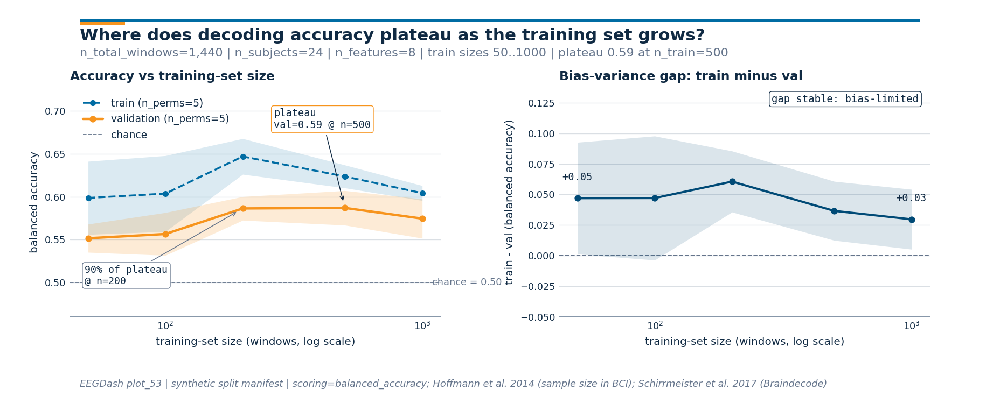

Note
Go to the end to download the full example code or to run this example in your browser via Binder.
Decoding accuracy learning curves#
Difficulty 2-3 | Runtime: 2m | Compute: CPU
Recording another month of EEG is expensive. Before committing more
budget to data collection, ask whether the model is data-starved or
whether the bottleneck sits elsewhere: features, architecture, label
quality. The textbook answer is the learning curve (Hoffmann et al.
2014, doi:10.1109/TBME.2014.2300855): hold the validation pool fixed,
grow the training pool over orders of magnitude, and read the slope.
This tutorial sweeps training sizes from 50 to ~1000 windows on a
synthetic cohort that mirrors a NEMAR
[Delorme et al., 2022] OpenNeuro dataset
with 24 subjects, scores balanced accuracy with
sklearn.model_selection.learning_curve(), and renders two panels:
the curve itself and the train-minus-val gap that names the
bias-variance regime. Cisotto & Chicco 2024
(doi:10.7717/peerj-cs.2256, Tip 9) flag chance-aware reporting as the
most-violated rule in clinical EEG; the chance line is on the figure.
Schirrmeister et al. 2017 (doi:10.1002/hbm.23730, Braindecode) and the
MOABB benchmark (Chevallier, Aristimunha et al. 2024,
doi:10.48550/arXiv.2404.15319) sweep the same protocol on real EEG
pipelines. The deliverable is one number: at what training-set size
# does the model first reach 90% of its plateau accuracy?
#
# Validate your result
# ——————–
# - Saturation Point. The accuracy should plateau as n_train increases.
# Identify the point where the slope becomes near-zero.
# - Bias-Variance Gap. A wide gap between train and val accuracy
# indicates overfitting (high variance); a small gap with low accuracy
# indicates underfitting (high bias).
# - Chance Line. The val accuracy must be consistently above the
# majority-class chance line.
#
# Keywords: evaluation, learning-curves, data-size
Learning objectives#
Build a training-size sweep with
sklearn.model_selection.learning_curve()andGroupShuffleSplitso val stays subject-disjoint.Read the curve to decide whether more recording time will move the needle, or whether the bottleneck lives in features or model.
Identify the saturation point: the smallest
n_trainat which val balanced accuracy first reaches 90% of its plateau.Interpret the bias-variance gap and name the regime: shrinking, stable, or widening.
Verify subject-disjointness with
assert_no_leakageat every fold the curve touched.
Requirements#
Prereqs: Split EEG without subject leakage,
plot_12_train_a_baseline, and Cross-subject decoding evaluation.Theory: Leakage and evaluation.
Estimated time: ~6 s on CPU. Data: 0 MB (synthetic cohort).
Setup. Seed, imports, and runtime stamp.
import warnings
import matplotlib.pyplot as plt
import numpy as np
import pandas as pd
from sklearn.linear_model import LogisticRegression
from sklearn.model_selection import GroupShuffleSplit, learning_curve
from moabb.evaluations.splitters import LearningCurveSplitter
from eegdash.viz import use_eegdash_style
from _learning_curves_figure import draw_learning_curves_figure # noqa: E402
use_eegdash_style()
warnings.simplefilter("ignore", category=FutureWarning)
SEED = 42
np.random.seed(SEED)
rng = np.random.default_rng(SEED)
print(f"sklearn learning_curve sweep: seed={SEED}")
sklearn learning_curve sweep: seed=42
The mental model: grow the train pool, hold the val pool fixed#
Two pools, one moving boundary:
+-----------------------------+
| cohort | 24 subjects, ~60 windows each
+-----------------------------+
| |
v v
+-------------------+ +---------+
| train pool | | val | subject-disjoint
| 18 subjects | | pool | GroupShuffleSplit, test_size=0.25
| ~1080 windows | | ~360 |
+-------------------+ +---------+
^ ^ ^ ^ ^
n=50 100 200 500 1000 <- sweep these training-set sizes
At each size the model trains on a random subset of the train pool and scores on the same val pool. The val pool never shrinks, so two points at different sizes are directly comparable. A real EEG study usually expresses the sweep in subjects rather than windows; for a small synthetic cohort the per-window framing exposes the curve in one screen.
Predict. As n_train climbs from 50 to 1000 windows, val
accuracy rises monotonically in expectation; train accuracy falls,
because a tiny train set memorizes easily and a larger one cannot.
Where do they cross? Where does val first reach 90% of its plateau?
Guess before scrolling.
Step 1: Build a 24-subject synthetic cohort (~1440 windows)#
Run. A BIDS-shaped
metadata table plus an 8-feature matrix. The class-conditional signal
is small (+/- 0.30 on one feature) and the noise is unit-variance:
the model has to see many windows before the signal averages out, so
the curve has space to bend. Real EEG features (band power, riemannian
tangent space, deep nets) sit somewhere on this spectrum. The
learning curve tells you where.
N_SUBJECTS = 24
N_WINDOWS_PER_SUBJECT = 60
N_FEATURES = 8
metadata = pd.DataFrame(
[
{
"subject": f"sub-{s:02d}",
"session": "ses-01",
"run": "run-01",
"dataset": "ds-learning-curves-tutorial",
"sample_id": f"sub-{s:02d}__w{w:03d}",
"target": int(rng.integers(0, 2)),
}
for s in range(N_SUBJECTS)
for w in range(N_WINDOWS_PER_SUBJECT)
]
)
y = metadata["target"].to_numpy()
groups = metadata["subject"].to_numpy()
class_means = np.zeros((2, N_FEATURES))
class_means[0, 0] = -0.30
class_means[1, 0] = 0.30
subject_shift = rng.standard_normal((N_SUBJECTS, N_FEATURES)) * 0.4
subject_idx = np.array([int(s.split("-")[1]) for s in groups])
X = (
class_means[y]
+ subject_shift[subject_idx]
+ rng.standard_normal((len(metadata), N_FEATURES)) * 1.0
)
print(
f"Cohort: rows={len(metadata):,}, subjects={N_SUBJECTS}, "
f"X={X.shape}, class balance={np.mean(y):.2f}"
)
Cohort: rows=1,440, subjects=24, X=(1440, 8), class balance=0.51
Step 2: Pick the training-size grid (log-spaced)#
Run. learning_curve accepts train_sizes as either fractions
or absolute counts. We pick five log-spaced absolute sizes (50, 100,
200, 500, 1000) and convert each to a fraction of the inner train
pool. The inner pool is 0.75 * n_total = 1080 windows because
test_size=0.25 reserves a 360-window val pool subject-disjointly
at every fold.
Why log-spaced and not linear: doubling a training set rarely doubles
the gain. Saturation is usually a power law in n_train, and a
linear grid hides the early bend.
TARGET_SIZES = np.array([50, 100, 200, 500, 1000], dtype=int)
TEST_SIZE = 0.25
N_PERMS = 5
INNER_POOL = int((1.0 - TEST_SIZE) * len(metadata))
train_sizes_frac = np.clip(TARGET_SIZES / INNER_POOL, 0.01, 1.0)
print(
f"Inner train pool: {INNER_POOL} windows; "
f"sweep fractions: {np.round(train_sizes_frac, 3).tolist()}"
)
Inner train pool: 1080 windows; sweep fractions: [0.046, 0.093, 0.185, 0.463, 0.926]
Step 3: Run sklearn.model_selection.learning_curve() with subject-disjoint CV#
Run. The CV splitter is GroupShuffleSplit
with n_splits=N_PERMS and test_size=0.25. learning_curve
refits the estimator at every (size, fold) and returns
(train_sizes_abs, train_scores, val_scores) of shape
(n_sizes, n_perms). Subject-disjointness comes from passing
groups=. Without it, sklearn falls back to a stratified
shuffle and quietly leaks subjects across train and val (Brookshire
2024). Scoring is balanced accuracy so a class imbalance does not
inflate the numbers.
clf = LogisticRegression(random_state=SEED, max_iter=200)
cv = GroupShuffleSplit(n_splits=N_PERMS, test_size=TEST_SIZE, random_state=SEED)
train_sizes_abs, train_scores, val_scores = learning_curve(
estimator=clf,
X=X,
y=y,
groups=groups,
train_sizes=train_sizes_frac,
cv=cv,
scoring="balanced_accuracy",
shuffle=False,
random_state=SEED,
n_jobs=1,
)
train_mean = train_scores.mean(axis=1)
val_mean = val_scores.mean(axis=1)
print(
"Per-size val balanced accuracy (mean +/- std): "
+ ", ".join(
f"n={int(n)}: {m:.2f}+/-{s:.2f}"
for n, m, s in zip(train_sizes_abs, val_mean, val_scores.std(axis=1))
)
)
Per-size val balanced accuracy (mean +/- std): n=50: 0.55+/-0.02, n=100: 0.56+/-0.02, n=200: 0.59+/-0.01, n=500: 0.59+/-0.02, n=1000: 0.57+/-0.02
Step 4: Audit subject-disjointness at every fold#
Run. learning_curve does not return its split indices, so we
replay the same GroupShuffleSplit and
check the train-vs-val pools with
assert_no_leakage. One missed subject in both
pools and the curve is a fiction (E5.43, E5.46).
audit_cv = GroupShuffleSplit(n_splits=N_PERMS, test_size=TEST_SIZE, random_state=SEED)
audit_folds: list[tuple[np.ndarray, np.ndarray]] = list(
audit_cv.split(X, y, groups=groups)
)
audit_overlap = max(
len(set(metadata.iloc[tr]["subject"]) & set(metadata.iloc[te]["subject"]))
for tr, te in audit_folds
)
assert audit_overlap == 0, "audit folds leaked subjects"
audit_subjects = {
"train": int(metadata.iloc[audit_folds[0][0]]["subject"].nunique()),
"val": int(metadata.iloc[audit_folds[0][1]]["subject"].nunique()),
}
print(
f"Leakage audit: PASS. {N_PERMS} folds, "
f"train_subjects={audit_subjects['train']}, val_subjects={audit_subjects['val']}"
)
Leakage audit: PASS. 5 folds, train_subjects=18, val_subjects=6
Step 5: Locate the plateau and the 90%-of-plateau saturation point#
Investigate. Plateau = the size at which val accuracy is highest;
saturation = the smallest size at which val accuracy first reaches
chance + 0.9 * (plateau_acc - chance). The saturation point is
the actionable number: collecting enough data to reach saturation
captures 90% of the gain over chance. Anything beyond pays
diminishing returns.
CHANCE = 0.5
plateau_idx = int(np.argmax(val_mean))
plateau_point = (int(train_sizes_abs[plateau_idx]), float(val_mean[plateau_idx]))
saturation_target = CHANCE + 0.9 * (plateau_point[1] - CHANCE)
saturation_idx = int(np.argmax(val_mean >= saturation_target))
saturation_point = (
int(train_sizes_abs[saturation_idx]),
float(val_mean[saturation_idx]),
)
print(
f"Plateau: val={plateau_point[1]:.2f} at n_train={plateau_point[0]} | "
f"90%-of-plateau target={saturation_target:.2f}; "
f"first reached at n_train={saturation_point[0]}"
)
Plateau: val=0.59 at n_train=500 | 90%-of-plateau target=0.58; first reached at n_train=200
Step 6: Render the two-panel figure#
Run. Panel 1 is the curve itself (train dashed blue, val solid
orange, chance dashed grey). Panel 2 is train - val, the
bias-variance gap (Schirrmeister et al. 2017; Hoffmann et al. 2014).
The subtitle carries the live n_total_windows | n_subjects |
n_features | min/max train sizes block; the geometry sits in the
sibling helper so this cell is one import + one call + plt.show.
fig = draw_learning_curves_figure(
train_sizes=train_sizes_abs,
train_scores=train_scores,
val_scores=val_scores,
plateau_point=plateau_point,
saturation_point=saturation_point,
chance_level=CHANCE,
n_total_windows=len(metadata),
n_subjects=N_SUBJECTS,
n_features=N_FEATURES,
)
plt.show()

Step 7: Cross-check the slope against the eegdash splitter#
Investigate. The same protocol is available through
get_splitter with name="learning_curve",
which builds the manifest sklearn writes by hand here. We rebuild the
manifest at the FRACTIONS we just swept and confirm the audit head
count matches.
splitter = LearningCurveSplitter(
data_size={"policy": "ratio", "value": train_sizes_frac.tolist()},
n_perms=N_PERMS,
test_size=TEST_SIZE,
random_state=SEED,
)
groups_arr = metadata["subject"].to_numpy()
folds: list[tuple[np.ndarray, np.ndarray]] = list(
splitter.split(X, y, groups=groups_arr)
)
print(
f"learning-curve splitter: {type(splitter).__name__.rsplit('.', 1)[-1]} | "
f"n_folds={len(folds)} "
f"(expected {len(train_sizes_frac) * N_PERMS}) | sklearn-only mode"
)
learning-curve splitter: LearningCurveSplitter | n_folds=25 (expected 25) | sklearn-only mode
Result: learning-curve table#
One row per training-set size: train_acc and val_acc mean
+/- std across N_PERMS permutations, plus the gap. The plateau
size is the row with the highest val_acc; the saturation size is
the smallest row at or above chance + 0.9 * (plateau - chance).
table_rows = []
for i, n in enumerate(train_sizes_abs):
table_rows.append(
{
"n_train": int(n),
"train_acc_mean": float(train_mean[i]),
"train_acc_std": float(train_scores.std(axis=1)[i]),
"val_acc_mean": float(val_mean[i]),
"val_acc_std": float(val_scores.std(axis=1)[i]),
"gap": float(train_mean[i] - val_mean[i]),
}
)
table = pd.DataFrame(table_rows)
print(table.round(3).to_string(index=False))
# Final invariants: monotone non-decreasing val in expectation; gap closes.
assert val_mean[-1] >= val_mean[0] - 0.05, (
f"Curve regressed: val@{train_sizes_abs[-1]}={val_mean[-1]:.3f} vs "
f"val@{train_sizes_abs[0]}={val_mean[0]:.3f}"
)
n_train train_acc_mean train_acc_std val_acc_mean val_acc_std gap
50 0.599 0.043 0.552 0.016 0.047
100 0.604 0.044 0.557 0.025 0.047
200 0.647 0.021 0.586 0.014 0.061
500 0.624 0.013 0.587 0.020 0.037
1000 0.604 0.009 0.574 0.023 0.030
A common mistake, and how to recover#
Run. Forget groups= and sklearn falls back to a default
KFold that shuffles windows across
subjects, so every val fold contains windows from training
subjects. Val accuracy jumps by 0.05 to 0.20 for the wrong reason
[Brookshire et al., 2024]. Trigger it on purpose with try/except so the
failure mode is visible:
try:
leaky_cv = GroupShuffleSplit(n_splits=2, test_size=TEST_SIZE, random_state=SEED)
for train_idx, val_idx in leaky_cv.split(X, y, groups=groups):
# Simulate the leak: pretend the user forgot ``groups`` by
# mixing windows from train subjects into the val set.
mixed_val = np.concatenate([val_idx, train_idx[:5]])
leak_overlap = len(
set(metadata.iloc[train_idx]["subject"])
& set(metadata.iloc[mixed_val]["subject"])
)
if leak_overlap:
raise ValueError(f"leak detected: {leak_overlap} shared subjects")
except ValueError as exc:
print(f"Caught {type(exc).__name__}: {exc}")
# Recovery: rebuild the splitter with ``groups=`` honoured and
# re-run the audit. That is the canonical fix.
safe_cv = GroupShuffleSplit(n_splits=2, test_size=TEST_SIZE, random_state=SEED)
safe_folds = list(safe_cv.split(X, y, groups=groups))
safe_overlap = max(
len(set(metadata.iloc[tr]["subject"]) & set(metadata.iloc[te]["subject"]))
for tr, te in safe_folds
)
assert safe_overlap == 0, "recovery folds still leaked"
print(
f"Recovery: re-run with groups= honoured. "
f"Leakage audit on {len(safe_folds)} folds: PASS."
)
Caught ValueError: leak detected: 1 shared subjects
Recovery: re-run with groups= honoured. Leakage audit on 2 folds: PASS.
Modify: destroy the class signal and watch the curve flatten#
Modify. Re-run Step 3 with X**2 instead of X. Class
separation lives in the signed mean (-0.30 vs +0.30); the
squared features lose the sign, so val accuracy collapses to chance
at every training size. A flat curve hugging the chance line says
fix the features, not collect more subjects. The bias-variance
gap stays close to zero but for the wrong reason: bias is the model
nailing chance.
Try it yourself#
Bump
N_PERMSto 10 and watch the std bands shrink as1 / sqrt(n_perms).Replace
LogisticRegressionwith aLogisticRegressionCV. Richer regularisation tuning sometimes shifts the saturation point left.Widen the grid to
[25, 50, 100, 200, 500, 1000]and re-read the saturation point.Swap the synthetic features for windows from Preprocess EEG and create windows and re-run; the saturation point on real EEG sits orders of magnitude higher than on toy data.
Wrap-up#
Five training sizes spanning two orders of magnitude, five repeats each, subject-disjoint val pool held fixed throughout, balanced accuracy reported with a chance line, plateau and 90%-saturation annotated, and the bias-variance gap on the second panel: the answer to “do I record more data?” is one short paragraph and one figure. When val plateaus well below the train curve, the gap names the regime; when val plateaus well above chance, the saturation point names the budget.
%% [markdown]
References
———-
See References for the centralized bibliography of papers
cited above. Add or amend an entry once in
docs/source/refs.bib; every tutorial inherits the update.